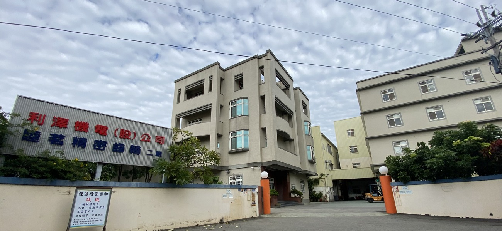

公司介紹
利澤機電成立於2014年，為利茗機械旗下的關係企業。專業製造、銷售電梯主機控制系統及電梯相關零組件。利澤機電主要相關從業人員均有電梯大廠服務經驗，對電梯部品的專業及服務上比同等競爭對手更具優勢，除了定期接受原廠技術支援、向客戶介紹性價比更高的產品，更提供即時專業服務，有效解決電梯客戶的問題，達到客我雙贏的目標。 
經營理念

本公司市場遍及全球各國，秉持著「因為專業，所以卓越」、「因為用心，深得您心」的專業服務態度以誠信待客，以客為尊，並持續開發創新，關注未來趨勢，為客戶提供最好的服務與資訊。有優質的產品及貼心的服務，自然能得到客戶的信賴與支持，更能讓公司永續經營。
主要商品 / 服務項目